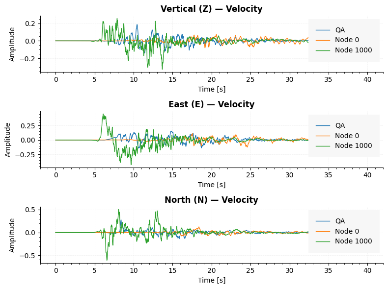

ShakerMakerResults¶
ShakerMakerResults is a Python package for reading, querying, plotting, comparing, and interactively visualizing the HDF5 results produced by ShakerMaker — a physics-based ground-motion simulation tool.
It is, deliberately, a results reader and visualization toolkit. It does
not generate .h5drm files or Green's Function databases: those come from a
ShakerMaker workflow associated with the work of Prof. José Abell and
collaborators. ShakerMakerResults picks up where the simulation ends.
What it reads
The package targets three families of files: DRM-style HDF5 results
(.h5drm), Green's Function databases (*_gf.h5), and Green's Function
mapping files (*_map.h5). The HDF5 layout (DRM box vs. surface grid vs.
real station recording) is detected automatically.
Key features¶
- Reads ShakerMaker HDF5 outputs into a single
ShakerMakerDataobject. - Queries node histories, QA histories, surface snapshots, and Green's Functions.
- Builds lazy derived models: time windows, resampling, and band-pass filtering.
- Produces domain, node, surface, spectral, Arias, GF, and animation plots.
- Compares multiple models in a common plotting and metrics interface.
- Computes Newmark response spectra and Arias intensity quantities.
- Ships an optional interactive Qt + PyVista viewer for 3-D inspection.
How it works¶
| Stage | You do | Tool |
|---|---|---|
| Load | open an .h5drm (and optionally GF + map) |
ShakerMakerData(...) |
| Derive | window, resample, or filter the signals | get_window · resample · apply_filter |
| Query | pull node / QA / surface / GF arrays | get_node_data · get_qa_data · get_gf |
| Plot | domain, node, surface, animation figures | plot_* · create_animation* |
| Compare | overlay several models + metrics | plot_models_* · compare_* |
| Visualize | interactive 3-D scene | model.viewer() |
A minimal example¶
from ShakerMakerResults import ShakerMakerData
# Load a result and (optionally) its Green's Function database + map
model = ShakerMakerData("surface_case.h5drm")
model.load_gf_database("greensfunctions_database_surface_gf.h5")
model.load_map("greensfunctions_database_surface_map.h5")
# A lazy 0–40 s window, then plot one node's velocity history
model_window = model.get_window(t_start=0.0, t_end=40.0)
model_window.plot_node_response(node_id=10, data_type="vel")

Where do you want to start?¶
-
I'm new — orient me.
Install the package and load your first result file.
-
Show me a working model.
Notebooks and scripts from real DRM / surface workflows.
-
I want figures fast.
Domain, node, surface, spectra, Arias, and animations.
-
Let me explore in 3-D.
The optional Qt + PyVista scene driven from
model.viewer(). -
How close are two runs?
Overlay traces and spectra, and compute similarity metrics.
-
Look up a class or method.
Auto-generated from the source docstrings.
Authors: Patricio Palacios B. · Nicolas Mora Bowen · @ppalacios92 · @nmorabowen